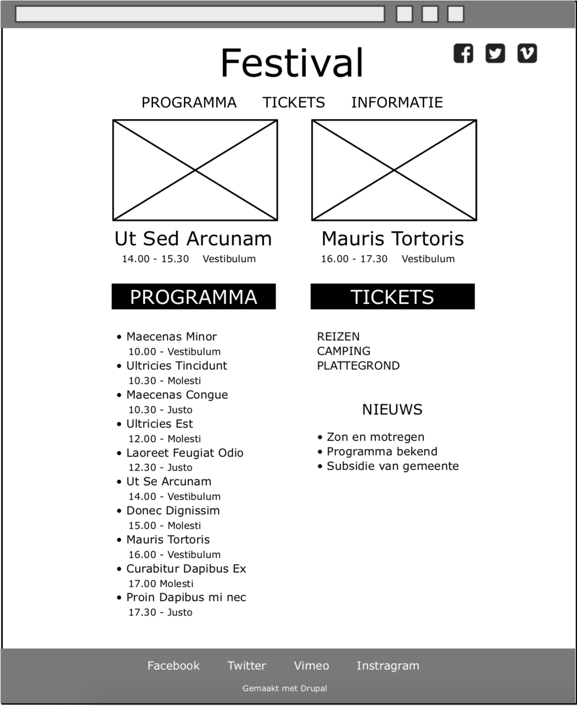

The OpenDrupal Drupal Fundamentals course is an introduction to Drupal as a Content Management Systeem. During this course you wil build a festival website. While building, you will get familiar with Drupal's fundamental concepts and experience the power of Drupal 8.
Start lesson 1 Visit the RepositoryThis course is primarily aimed at people who will work with Drupal as site builer, backend or front-end developer. But also project leads and webdesigners who are involved with Drupal, will benefit from the introduction this course provides.
No previous experience with Drupal is required. Experience with other Content Management Systems may be beneficial.
After participating in this course you can build a basic Drupal site using Drupal core. You can contribute to a more complex website as part of a team of Drupal developers.
Afterwards you can answer questions like:
This course is broken down in the lessons listed below. The total course will, in average, take 2 days of 6 hours each.
During this course the participants will build a festival website. The lessons have a practical setup and consists of a mix of explanation, demonstration and exercises.
During this course you will build a festival website. This uses the most common functions of Drupal core and some popular contributed modules. You will learn to use best practices of building with Drupal.

To participate in this course, you need a standard Drupal installation, preferrably one Drupal site per person. Your trainer may provide a hosted Drupal site for you. If you know how to install Drupal, check the Drupal installation section below.
Attendees need a working Drupal 8 site to perform the exercises. You as a trainer need one too to demonstrate Drupal and explain and demonstrate the exercises.
The trainer is advised to use a personal sandbox on a localhost server. For attendees there are roughly two options: On-line and provided by the trainer or Self hosted by the attendee on a localhost server. The choice depends on the attendee's abillity, or their company's, to install Drupal.
Use the latest stable Drupal release. Use the opendrupal_drupal_fundamentals installation profile that is included, and copy it into the profiles directory. Install Drupal with this installation profile. The profile can be found in the set-up directory of this course.
The OpenDrupal Curriculum is a collection of training materials for learning Drupal. The materials are intented to be used by experienced Drupal users to teach Drupal to others.
As any open source project, we need your contributions. Drupal evolves constantly and the courses need maintenance. We expect your contribution in the OpenDrupal github repository.
Find the community online at: